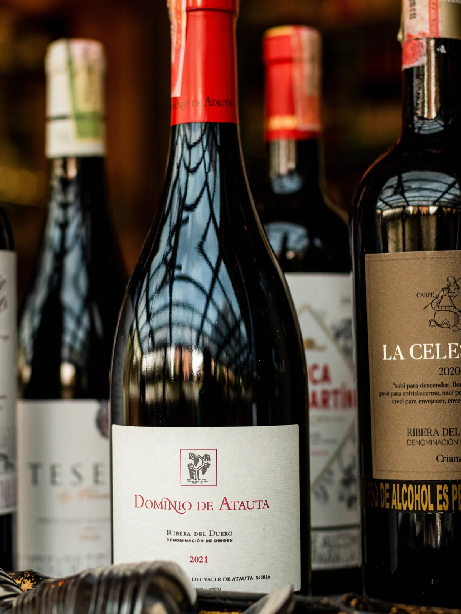

La Favorita
Ultramarinos.
Cocina de raíz.
Una propuesta de cocina española y tapas que recupera el imaginario de los ultramarinos: producto, recetas tradicionales y una mesa para compartir.
Lo documentado
ICEX la clasifica como cocina española y tapas. Crónicas de 2024 describen el imaginario de ultramarinos.
Las referencias de 2024 no confirman la carta, el inventario ni el estado actual del espacio.
Fuente institucional · ICEX